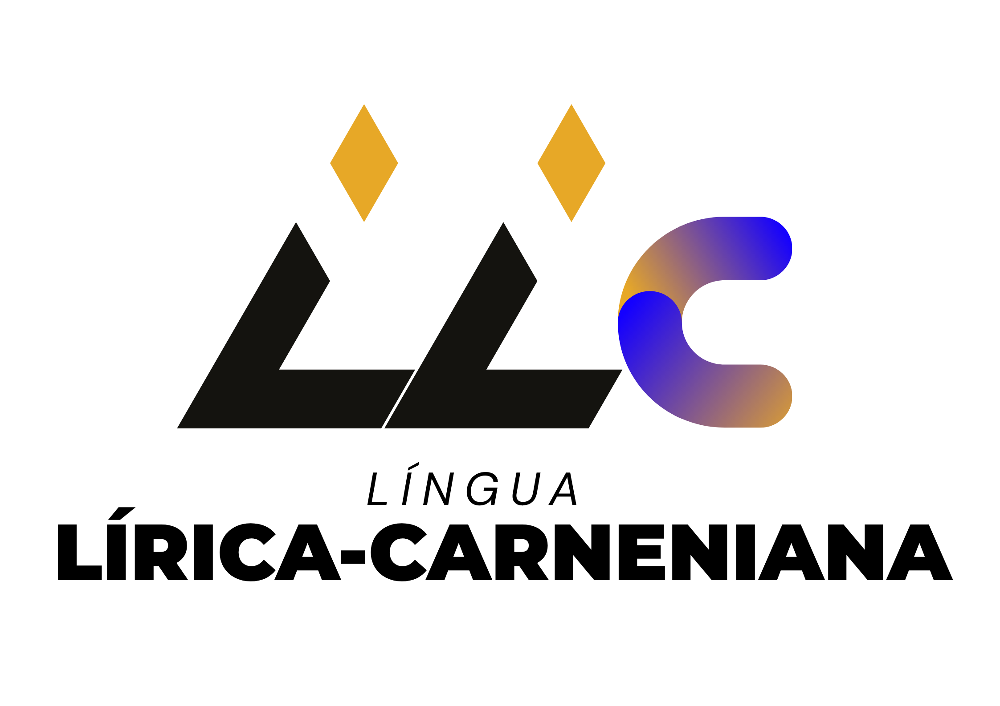

Lírico Carneniano'">
Motor SVO, Flexão Absoluta, Honoríficos & Gênero Biológico • OCL
🔄 Tradutor Sintático
📖 Dicionário de Termos
Português
⇄
Lírico Carneniano
Motor de Flexão Avançado Ativo
0 caracteres
Limpar
A tradução aparecerá aqui...
🔊 Ouvir
Copiar Texto
Busca Total
Carneniano → PT
PT → Carneniano
Carregando...